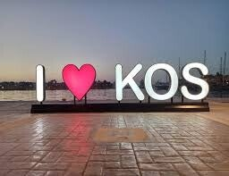
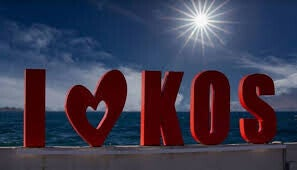

I Love Kos
Populaire fotospot met de grote “I Love Kos”-letters – er zijn er zelfs twee op het eiland.
Gratis
Fotospot
Sinds 2021
Twee sets letters
Sinds 2021 heeft Kos zijn eigen “I Love Kos”-letters. Er zijn niet één, maar twee sets te bewonderen – onder andere bij de haven van Kos-stad.
Het is een super populaire fotospot: bijna iedereen op vakantie maakt hier een foto.
2
sets letters
Gratis
openbaar

De letters bij de haven
Fotospot
Bezoek de bekende letters in de haven van Kos-stad. Ideaal voor een vakantiefoto met zee of kasteel op de achtergrond.

Letters
Fotospot
Letters
Overzicht
Bezoeken
Tip: Kom vroeg of later op de dag voor minder wachtrij bij de foto. Kijk of de letters aan de haven of de andere locatie beter in je route past.